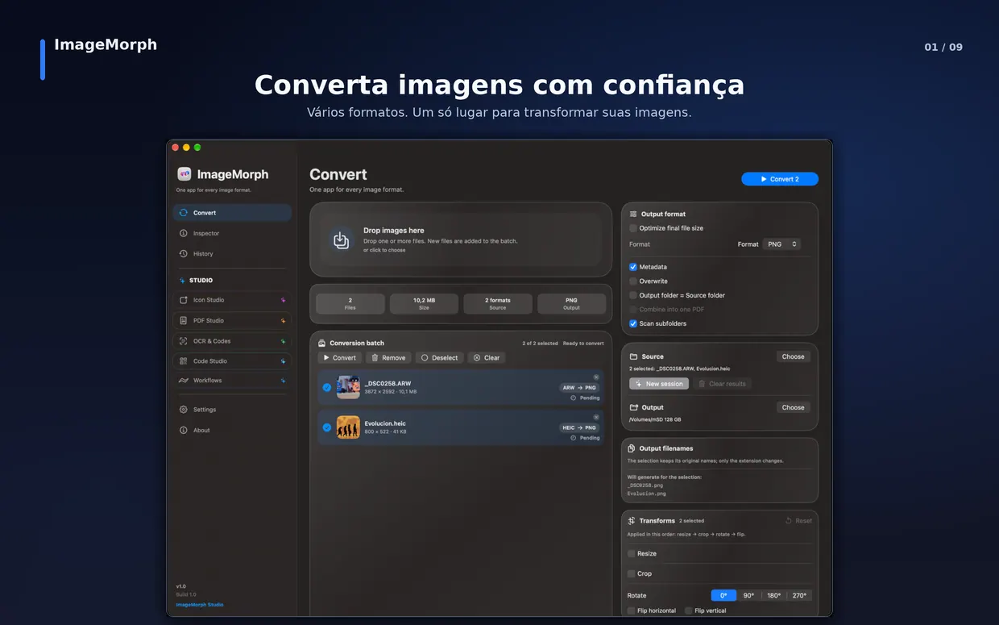
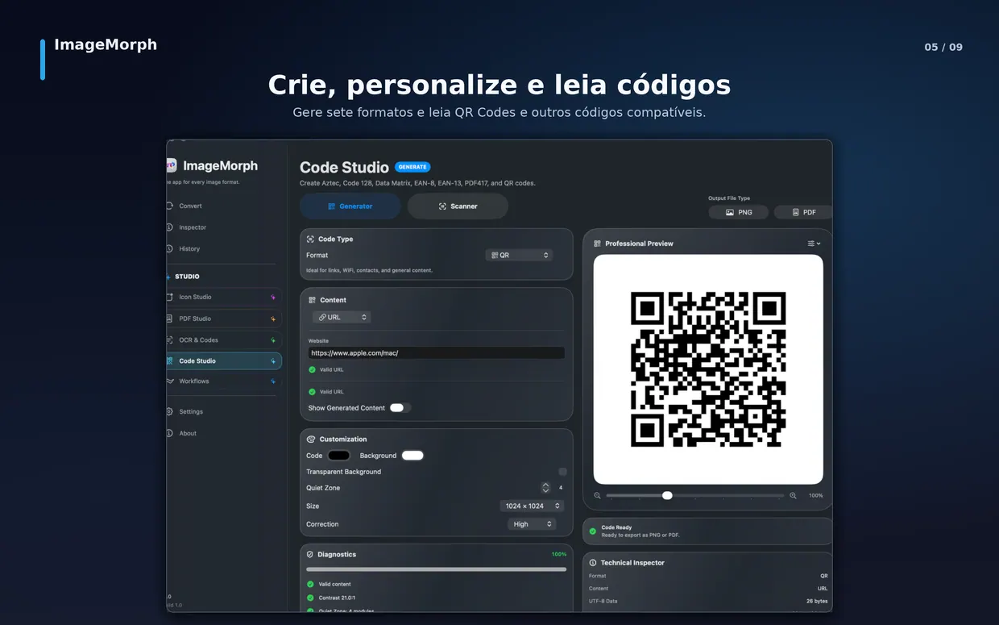
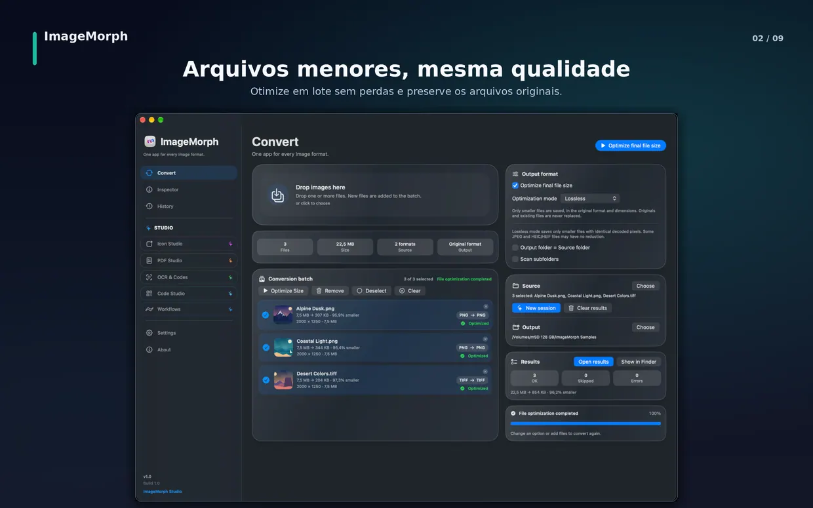
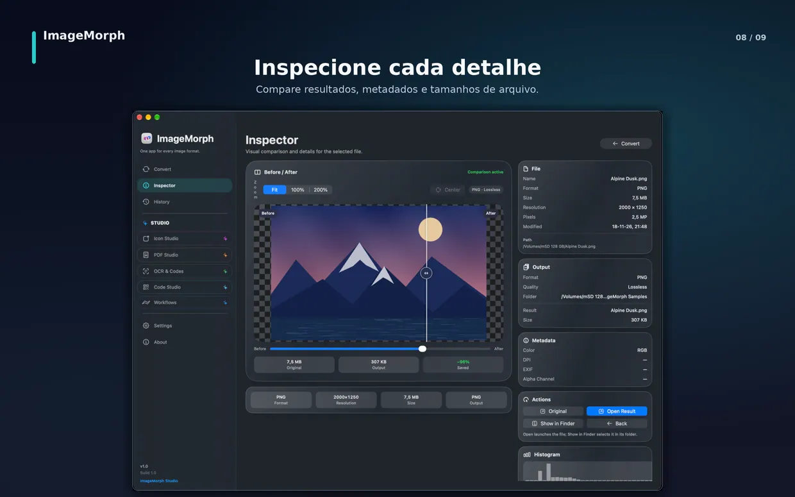
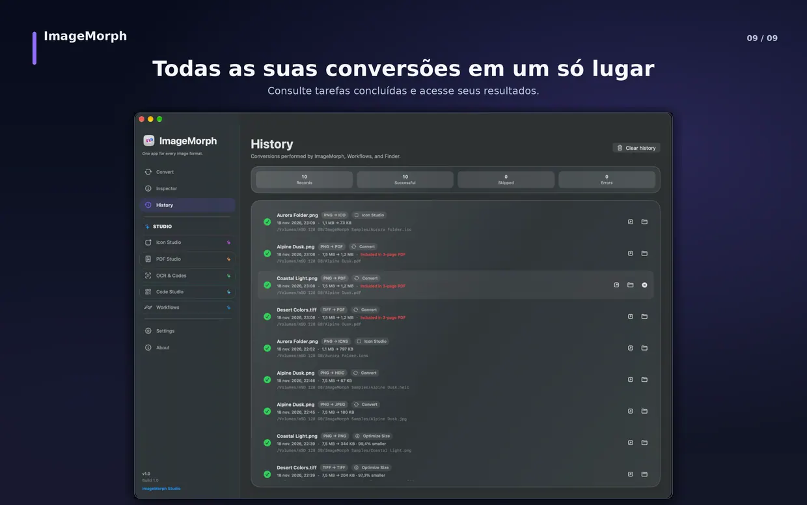
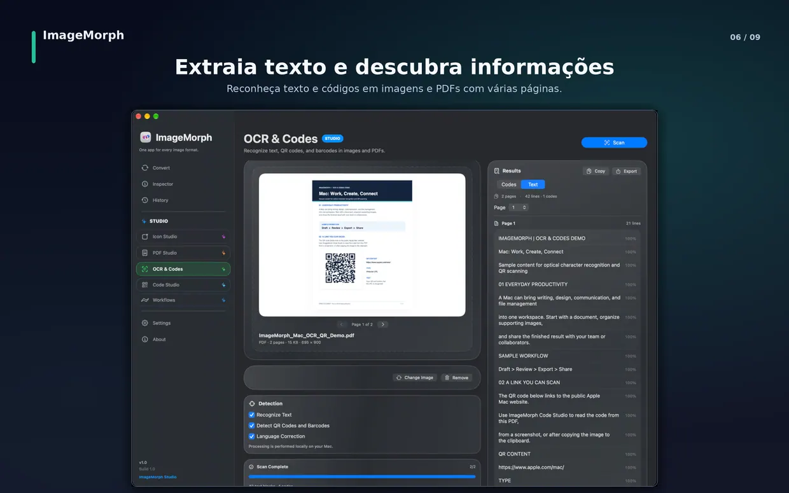
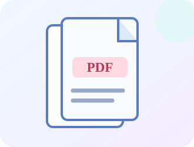
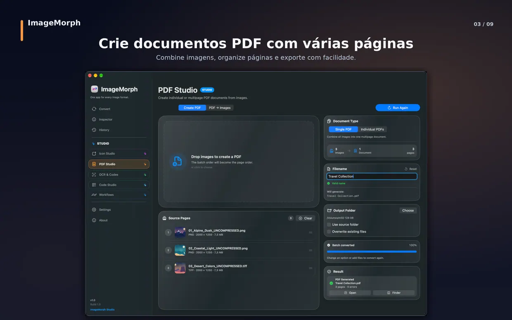
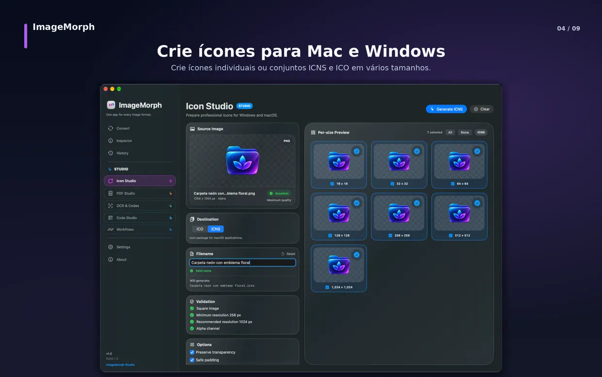
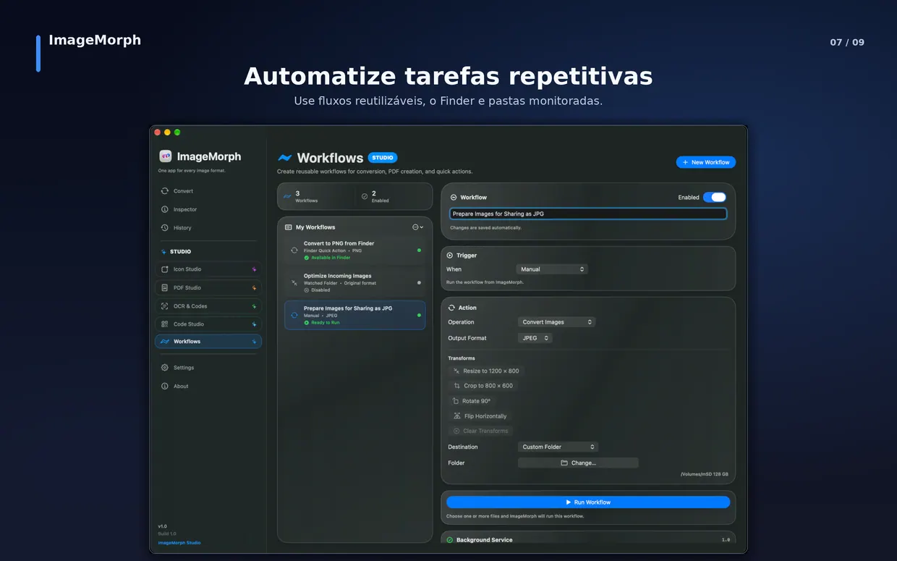

JPEG · PNG · HEIC · TIFF
Formatos como JPEG, PNG, HEIC e TIFF, individuais ou em lote.

Converta, redimensione e otimize imagens. Crie PDFs e automatize tarefas repetitivas no Mac.
Preparando o lançamento na Mac App Store.

Converta, redimensione e otimize imagens. Crie PDFs e automatize tarefas repetitivas no Mac.

Reconheça texto em imagens e PDFs de várias páginas; revise e exporte os resultados.
Leia códigos QR recebidos por e-mail ou em PDFs no Mac e confira o endereço de destino antes de abrir.


Visualizar um URL não garante que o site seja seguro. Confira o domínio e evite fornecer dados em sites inesperados.
Explorar ferramentas de códigoFormatos como JPEG, PNG, HEIC e TIFF, individuais ou em lote.

Altere as dimensões e proporções das imagens para diferentes usos, preservando a proporção original quando necessário.

Otimização com ou sem perdas conforme o formato; saída apenas se for menor.

Veja formato, dimensões e metadados. Após converter, compare o resultado com o original.

Revise operações e abra os arquivos gerados ou mostre-os no Finder, caso ainda existam.

O Studio reúne OCR, leitura de códigos, ferramentas PDF, ícones e automação. Compra única, sem assinatura.
O Studio é uma compra no app opcional e permanente.

Reconheça texto em imagens e PDFs de várias páginas; revise e exporte os resultados.


Leia códigos da área de transferência, imagens, PDFs ou pastas e capture com câmeras e scanners compatíveis. Confira o conteúdo e os links antes de abrir.


Crie PDFs de várias páginas, exporte páginas como imagens e ajuste seleção e rotação.

Gere arquivos ICO e ICNS e confira os tamanhos antes de exportar.


Crie QR, Code128, Data Matrix, EAN, PDF417 e Aztec; exporte PNG ou PDF.

Salve fluxos, monitore pastas e inicie ações no Finder.

| Recurso | Free | Studio |
|---|---|---|
| Conversão, tamanho e otimização | Incluído | Incluído |
| Fila, Inspetor, comparação e histograma | Incluído | Incluído |
| Criação básica de PDF | Incluído | Incluído |
| PDF Studio e exportação de páginas em imagens | — | Incluído |
| OCR e reconhecimento de códigos | — | Incluído |
| Geração de códigos e captura por câmera ou scanner | — | Incluído |
| Conjuntos ICO e ICNS | — | Incluído |
| Fluxos, pastas monitoradas e Ações Rápidas do Finder | — | Incluído |
O preço localizado, o acesso ao Studio e a elegibilidade do teste aparecem no app. Compras e restaurações usam serviços da Apple.
Conversão, otimização, criação de PDF e OCR são realizadas no Mac. O conteúdo dos arquivos não é enviado ao serviço de teste do Studio. Arquivos, pastas, câmeras e scanners exigem permissões; ajustes, histórico, marcadores e registros com nomes, caminhos ou erros podem permanecer no dispositivo.
Ler a política de privacidade